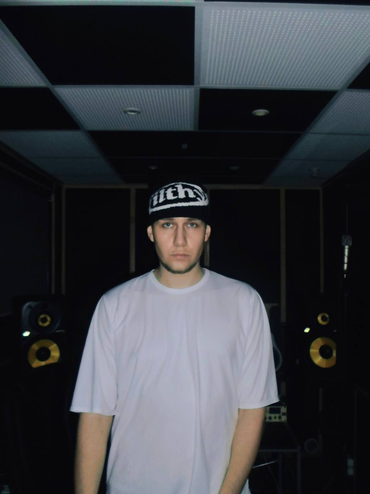
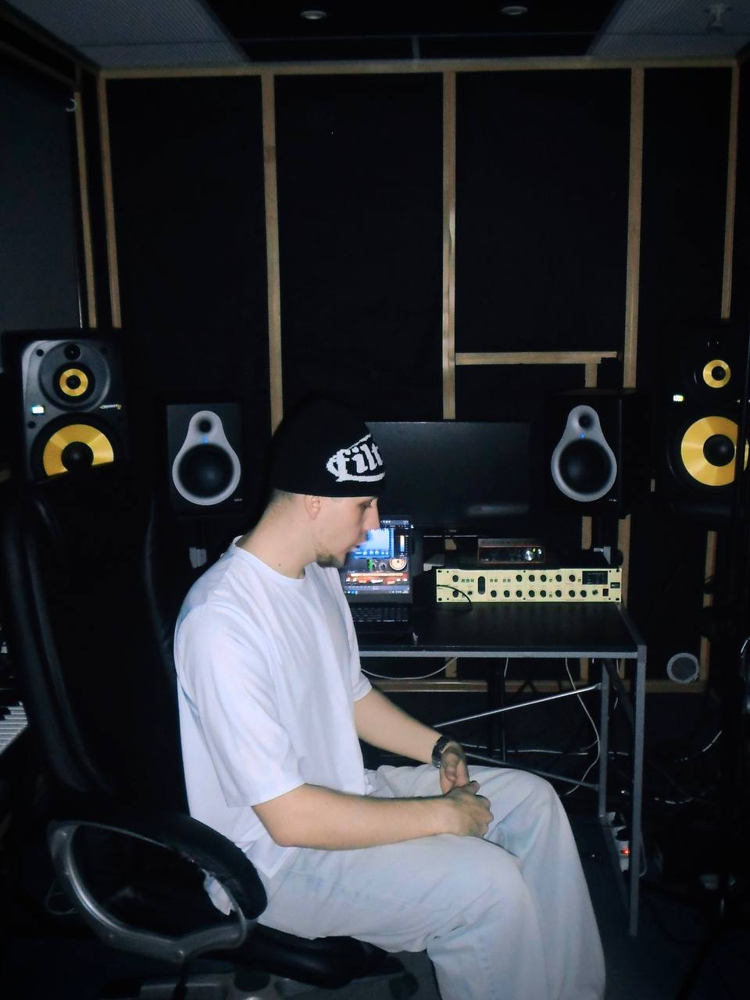
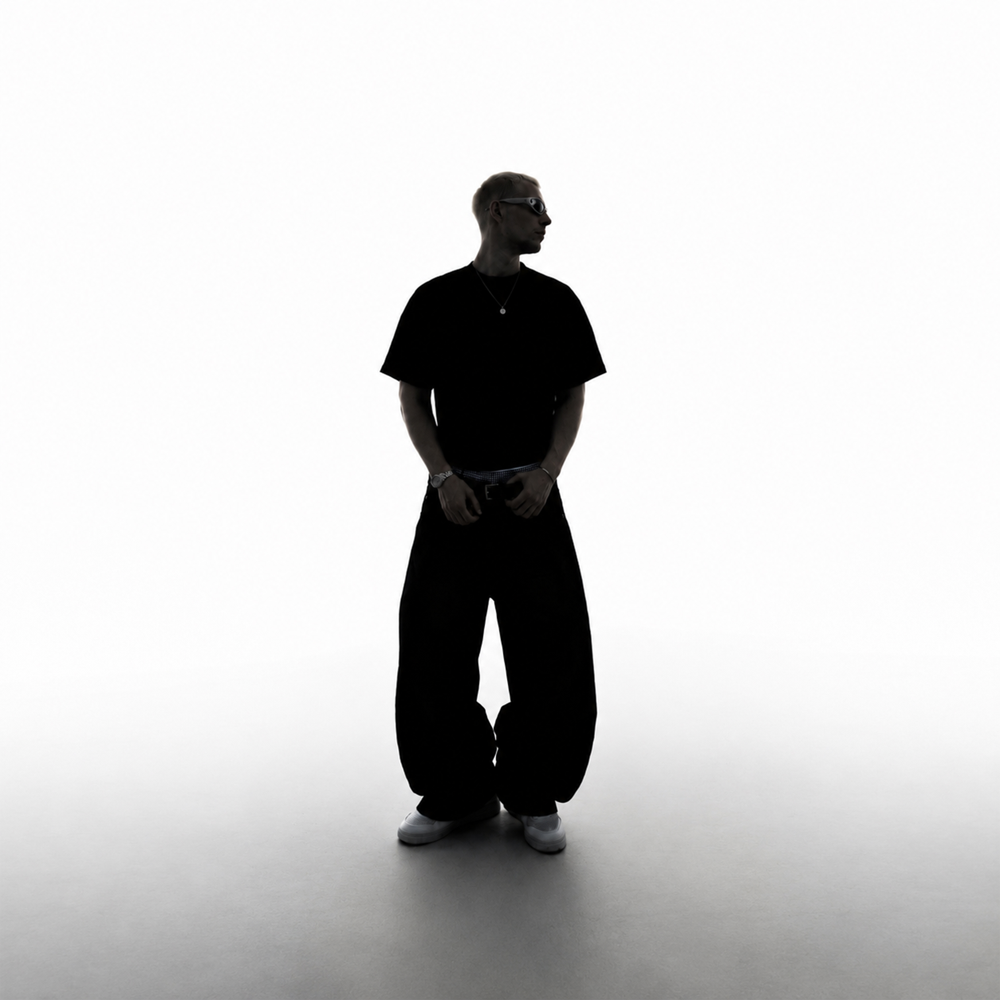
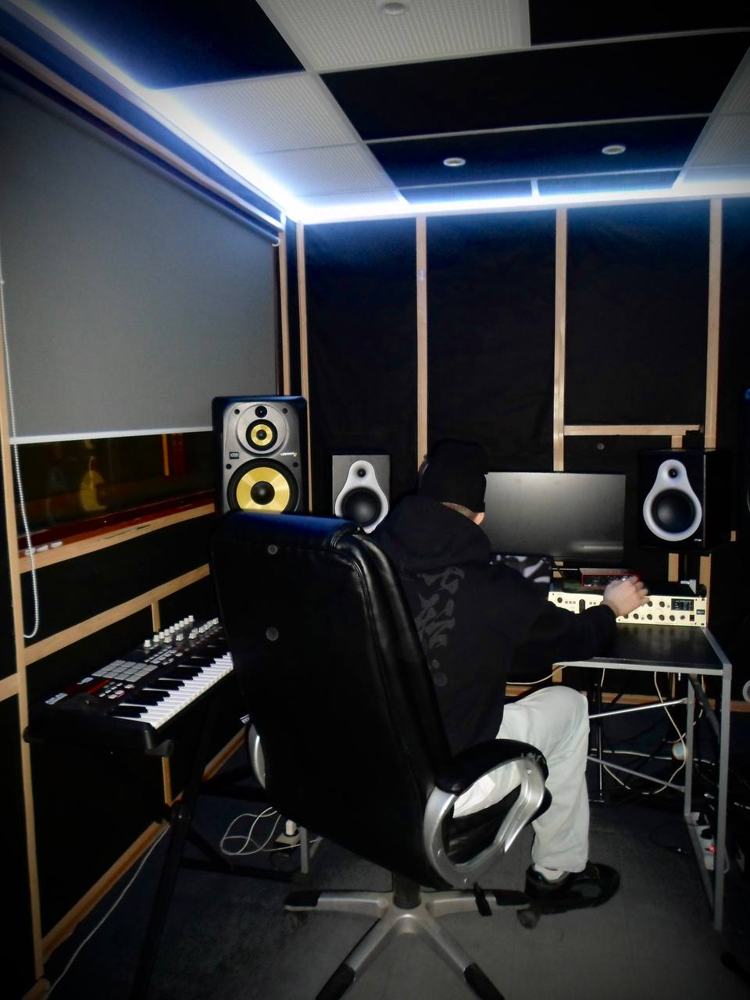
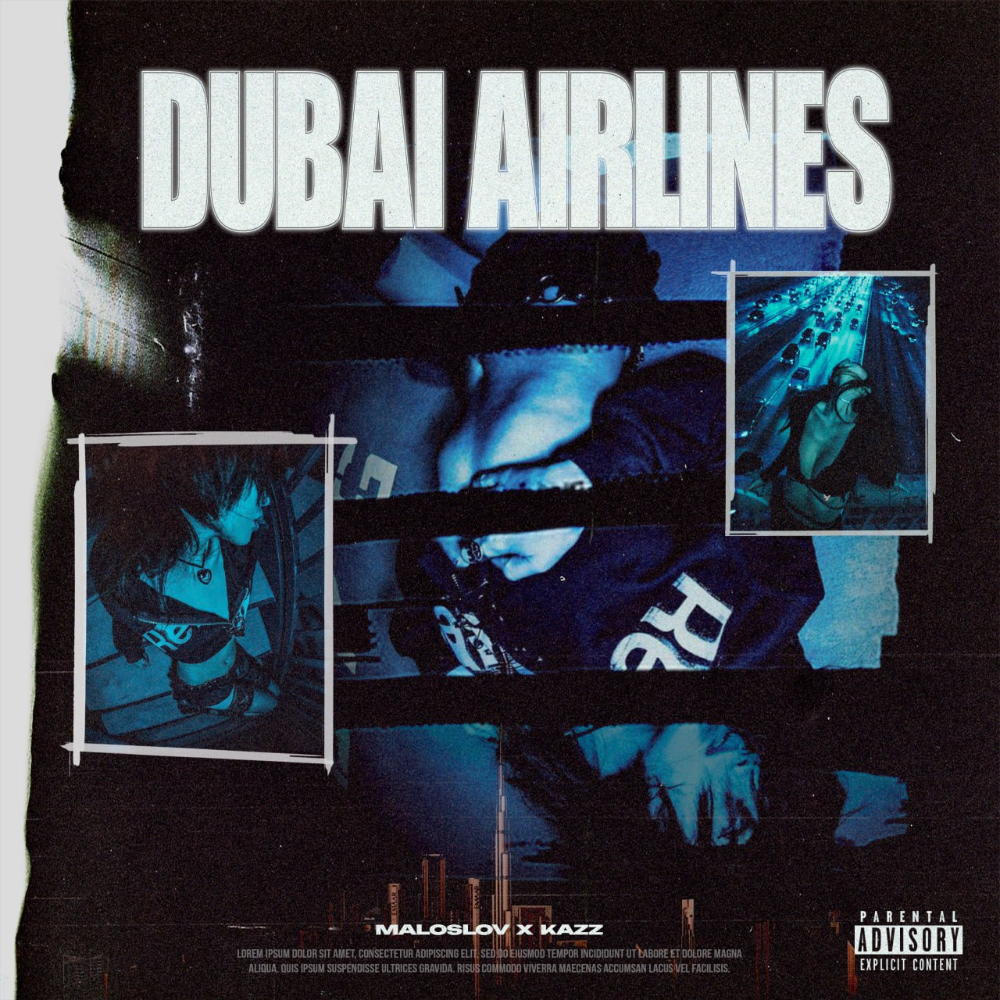

STUDIO MOMENTS
ЗА ЗВУКОМ




Музыка как способ передавать внутренние эмоции через звук. От написания текста и записи вокала до продакшна, сведения и финального мастеринга.

MALOSLOV занимается музыкой более десяти лет —
от изучения гитары до создания студийной среды
и сотрудничества с артистами в разных направлениях.
Каждый трек создается самостоятельно:
написание, запись, продакшн, сведение и мастеринг.
Музыка остается одновременно личной терапией
и способом передавать эмоции через атмосферу и звук.

Наиболее прослушиваемый релиз MALOSLOV в коллаборации с артистом KAZZ.
LISTEN NOW

